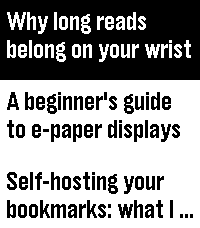
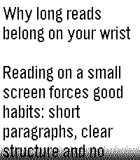
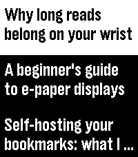
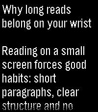
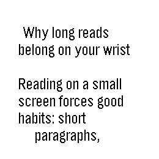

What it is
Karakeep Reader is a Pebble watchapp that lets you read the articles saved in your own Karakeep (formerly Hoarder) server straight from your watch. It works with self-hosted and hosted instances; you only need a Karakeep URL and an API key.
Features
- Browse your latest bookmarks: not archived, favourites or all
- Read the full article text with smooth scrolling
- Uses the content Karakeep has already crawled, so articles load fast
- Works with text notes as well as saved links
- Text size follows your watch setting, or choose one size for the list and another for articles
- Light and dark themes
- Long-press Select in the list to refresh
Screenshots

List
Reader
Dark list
Dark reader
Round watchSetup
- Install the app from the Pebble app store (or download the
.pbwfrom the latest release and open it with the Pebble app on your phone). - In Karakeep, go to Settings > API Keys and create a new key.
- Open Karakeep Reader's settings in the Pebble app on your phone.
- Enter your server URL (for example
https://karakeep.example.com) and the API key, then save.
Good to know
- Requires your own Karakeep instance and an internet connection on your phone.
- Your URL and API key are stored only in the Pebble app on your phone and are used only to talk to your server.
- Text only: images are not shown, and very long articles are cut after about 14,000 characters.
- Built for Pebble Time 2 (emery), Pebble Round 2 (gabbro), Pebble 2 Duo (flint) and Pebble 2 (diorite).